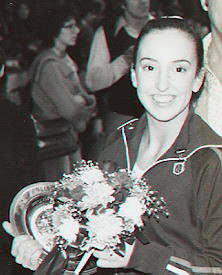

Carrie Englert (USA)
1976 US B and FX Champion
1976 Olympian

Carrie was born on November 28, 1957 and trained at the Tallahassee Tumbling Tots, and then at the National Academy of Artistic Gymnastics (from 1974 to 1976) under Dick and Linda Mulvihill. During her elite career, she won the Junior Olympic all-around title, the 1976 B and FX national titles, and was a member of the 1976 US Olympic team. After the Olympics Carrie enrolled at Clarion State College, and in 1977 led her team to both the EAIAW and AIAW championship titles. She also competed at the 1977 World University Games in Sofia, Bulgaria, where she was team captain.
Carrie married Curtis Zimmerman in July 1979, and they have 3 sons. The couple own the largest PR firm in Florida: The Zimmerman Agency is an advertising, public relations and interactive firm, in Tallahassee.
Competition Results
1973
AAU Jr. Olympic Nationals (senior division): 1st AA, 1st UB, 1st BB,
1st FX
1974
USGF Senior Nationals: 4th AA
1975
2nd Elite Qualification Meet: 3rd AA
Elite Qualification Meet: 5th AA
Emerald Empire Cup: 6th AA, 2nd B, 4th V
1976
Emerald Empire Cup: 4th AA, 1st B, 1st FX
Olympic Games: 6th Team, 42nd AA (prelims)
Olympic Qualifying Competition: 1st Team, 12th AA
US Championships: 6th AA, 1st B, 1st FX, 6th UB
US Olympic Trials: 5th AA
USA-CAN-MEX Tri-Meet: 1st Team, 8th AA
USGF Elite Championships: 7th AA, 1st B, 1st FX
1977
AIAW Division I Nationals: 1st Team, 2nd AA, 2nd FX
University Games Trials: 5th AA
This page was created on June 25,
2005 and was last updated on Jne 23, 2021.
© Gymn Forum
Many thanks to Carrie Zimmerman for providing biographical and competition results.